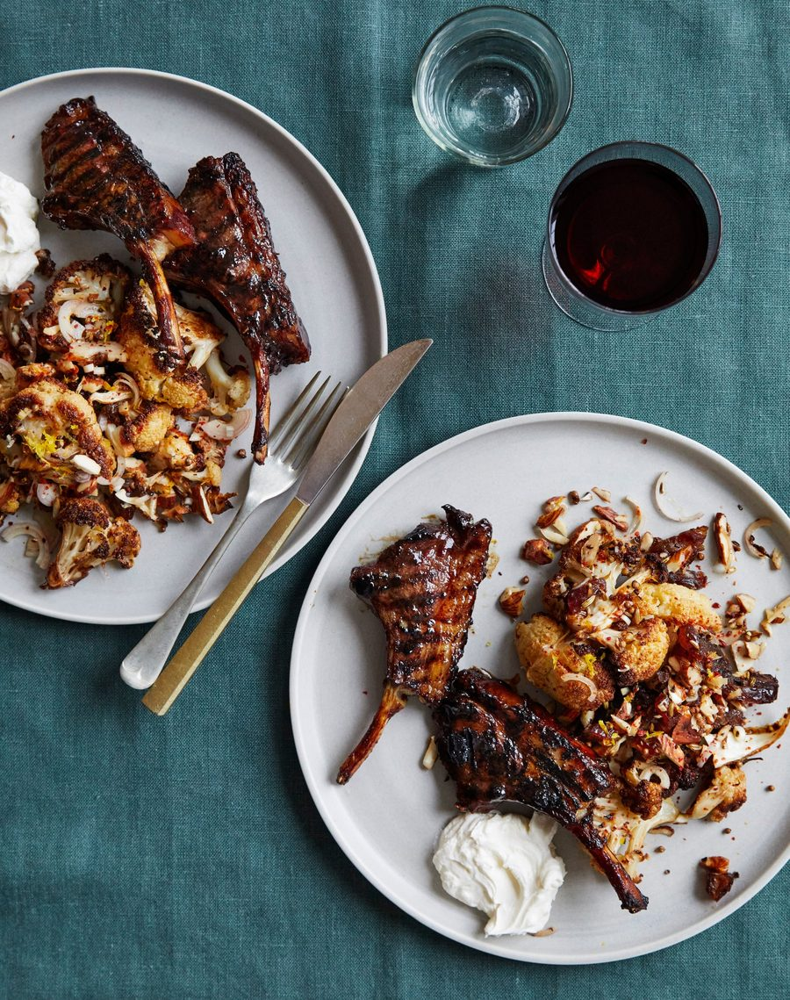

Glazed lamb chops with cauliflower, almond and date salad

Sweet with dates, sour with tamarind and rounded off with earthy spice, this sticky marinade is simple to make but gives rich and complex flavour.
For the marinade
For the salad
Heat the oven to 200C (180C fan)/390F/gas 6. Put the lamb in a shallow bowl. Mix all the ingredients for the marinade in a small bowl, pour this over the lamb and massage it in so the chops are well coated. Marinate for at least two hours, but preferably overnight.
In the meantime, make the salad. Lay the cauliflower in a roasting pan and scatter over the coriander and fennel seeds, pul biber flakes, sea salt and pepper, then drizzle over the olive oil. Roast for 40 minutes, turning once, until the cauliflower is golden and charred.
In a bowl, toss the cooked cauliflower with the dates, shallot, olive oil and lemon zest and juice.
Get a griddle pan very hot, then cook the lamb cutlets for three minutes on each side, or until cooked to your liking. Make sure to prop up and cook the fatty side, too, so it gets golden and seared.
Serve with the cauliflower salad and a dollop of labneh.